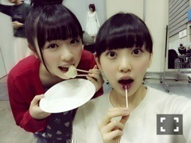
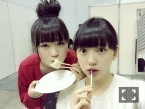

2015/0206Fri満タン→万端
今日の朝
私が残しておいた大好きな大好きな
安納芋が今朝冷蔵庫に入っていなくて...
楽しみにしていたものだし
食べた記憶もないから
あれおかしいなぁって思って
探していたら
何と私の姉がソファに座って
優雅に安納芋を食べてたの‼︎
それからふてくされていたら
755見たお姉ちゃんが焦って
わざわざ買ってきてくれました笑
もう許したよ(,,•﹏•,,)笑
仲良しだけどよく喧嘩するの。
しょうもない？事で振り回して
ごめんなさい

綺麗な貝みっけ‼︎
小さい貝殻も見つけたの♪
穴開けてネックレスにしようかな〜
休憩時間、必死に屈んで貝殻を
探していたら
松村さんにみおたん何してるの？って
言われて
貝を探してるんです！
私は貝になりたい、、
って言ったら
めっちゃ笑ってくれました笑
最近は寒い場所での撮影が多いけど
みんなでギューってしながら
温まって頑張っていますヽ(*・ω・*)ﾉ

太陽？月？
よく分からないけど
なんか丸いものと(｡･ω･｡)
熱いお風呂に浸かる
髪を乾かす
コーヒー牛乳を飲む
歯を磨く
次の日の洋服を決める
0時20分に布団に入る
部屋の電気を消す
とある日の私の家に帰ってから
寝るまでの流れ。
なかなか布団に入ってから
寝れないけど...
寝ても怖い夢を頻繁に見るし...
でもたまにファンタジーチック
で可愛い夢も見ます☆
前は私がお菓子の国で
お菓子を次々に開発してみんなに
未央奈様のお菓子は世界一です！
って言われてなぜか頭の上に
いちご大福を乗せた私がお城の
ベランダで手を振りながら
けらけら笑っていました

よく分からない瞬間を
撮られた
最近私がback numberさん好き
でよく聴くっていう話をブログ
とか755でしていたら
ファンの方が聴いてみたら好きになったよ
ってコメントとかで言って下さって
何か嬉しいです♩
他には
ONE DIRECTION
Mcfly
Blue
Backstreet Boysが好きかな
告知
発売中
◎POKER FACE
◎読売中高生新聞
◎UTB未公開グラビア◎Ray
◎street JACK
◎FLASHスペシャル 2015新年号
◎月刊エンタメ未公開グラビア
◎EYESCREAM
◎日経エンタテインメント！
◎CDでーた
◎グラビアザテレビジョン
◎読売中高生新聞
◎ENTAME
◎2/9発売 BOMB
→初、日奈子とのグラビア！
堀北コンビ♡
TV
◎2/7 伝えてピカッチ
2回目の出演です！
◎2/7 23:30〜0:00 乃木坂46 SHOW！
メイドのコントとオープニングの
コントは白石さんと
出させていただきました！
楽しかった〜♡
頑張ったので見てください！
明日は忙しいですよ(,,•﹏•,,)？
ラジオ
◎2/10〜 全国ファミリーマートにて
深川さんとファミラジを
してきました！
沢山流れると思うので
よろしくお願いします♡
まったり食べ物大好き姉妹♡
以上
大好きなジブリのお店へ
行ってきました！
店内にもジブリの曲が流れていて
もうあまりにも幸せで
ずっと目を輝かせながら
いろんなものを見てきました
特に魔女宅コーナーが素敵♩
トトロとメイちゃん
スタジオジブリの世界が好き。
好きすぎて生まれ変わるならジブリの
登場人物になりたい٩꒰｡•◡•｡꒱۶



大食いシスターズ！
最後に...
みなみ誕生日おめでとう♡♡♡
気合い入れすぎちゃって23:59に
メールしちゃった笑
みなみにはメールしたから
ブログに詳しくは書かないけど...
いつも私のそばにいてくれて
ありがとう。
これからもずっと一緒にいてね(｡･ω･｡)
大好き！
私のシンメはずっとみなみ♪

そして畠中さんの卒業が
発表されました。
可愛がってくださった先輩や
一緒に頑張ってきた同期がいなく
なるのはやっぱり寂しいな...
でも畠中さんが決めた事やもん！
私が何か言った所で変わらないし...
いつも会うたびに未央奈、元気？
どう？って聞いてくださったり
ハグしてきたり可愛い畠中さん。
またご飯行きたいです！
残りの期間、たくさんたくさん
話せたらいいな！

今日は猫の恩返しと
ウォーキングデッド観ようかな♩
明日の握手会も楽しみ！
衣装、何を着よう？
寒いみたいなので暖かくしてきて
下さいね...>_<...
ではではおやすみおな(ヽ´ω`)
2015/02/06 20:54
コメント(615)
みおなかわいい～！
今日の握手会楽しかった！
せっかく衣装着てたのに
あんまり話せなかったけど
やっぱりバレッタが好き！！
ガールズルールの未央奈も
見たかった。(._.)
11thシングルの個別握手会
行こうか迷ってたけど
今日未央奈と握手したら
絶対行こうと思いました！笑
だからまたよろしくね！
せっかく衣装着てたのに
あんまり話せなかったけど
やっぱりバレッタが好き！！
ガールズルールの未央奈も
見たかった。(._.)
11thシングルの個別握手会
行こうか迷ってたけど
今日未央奈と握手したら
絶対行こうと思いました！笑
だからまたよろしくね！
明日行くよー！すんごく楽しみだよ。BOMB早く見たいな〜堀北コンビ推しだからw最近楽しみが多くて嬉しい！明日楽しみましょう
今日握手会いきましたー、みおな、可愛かったー
また、行きますねー
応援してます、歌声もっとききたいな
また、行きますねー
応援してます、歌声もっとききたいな
握手会お疲れ様(^o^)
今日の握手会は４部
だけだったけど、
未央奈に久しぶりに
会えてすごい
嬉しかったo(^▽^)o
衣装、間近で見ること
ないから見れてよかったし、
似合ってたよ(´▽`)ノ
衣装、自信なくて
質問しちゃって
ごめんね(。>ω<。)
未央奈のセンター曲なのに…
今回のイベントで
衣装もしっかり
見ていかないと
いけないなと思った(;・д・)
全体的にみても
自信持ってわかるのが
少ないかもしれない…(笑)
明日は１部から行くよ(*´▽｀*)
楽しい握手会に
できたら、いいな(ゝω・)
じゃあ、またね(＾∇＾)
今日の握手会は４部
だけだったけど、
未央奈に久しぶりに
会えてすごい
嬉しかったo(^▽^)o
衣装、間近で見ること
ないから見れてよかったし、
似合ってたよ(´▽`)ノ
衣装、自信なくて
質問しちゃって
ごめんね(。>ω<。)
未央奈のセンター曲なのに…
今回のイベントで
衣装もしっかり
見ていかないと
いけないなと思った(;・д・)
全体的にみても
自信持ってわかるのが
少ないかもしれない…(笑)
明日は１部から行くよ(*´▽｀*)
楽しい握手会に
できたら、いいな(ゝω・)
じゃあ、またね(＾∇＾)
未央奈さん初めまして:)
BlueにMcFly!?
その年齢で知ってるなんて、当時流行ってる頃に聴いてた自分にとってはなんだか嬉しいです！
Best in Me
Don't Treat Me Like a Fool
U Make Me Wannaとかいいですよね〜
BSBはNever Goneてアルバムが大好きです＾＾
またこれからも頑張ってくださいね:)
BlueにMcFly!?
その年齢で知ってるなんて、当時流行ってる頃に聴いてた自分にとってはなんだか嬉しいです！
Best in Me
Don't Treat Me Like a Fool
U Make Me Wannaとかいいですよね〜
BSBはNever Goneてアルバムが大好きです＾＾
またこれからも頑張ってくださいね:)
こんばんわ^^
握手会お疲れ様♪
安納芋のお話、ほのぼのしていていい話だね☆
貝殻って不思議だよね♪
集めたくなる…^^
夢の話もっと聞きたい！
ジブリの話も☆
また次回のブログも楽しみにしています^^
ブログのほかにも…
未央奈のおかげでまた一つ楽しみができたよ☆
ありがとう！！
ではでは♪

握手会お疲れ様♪
安納芋のお話、ほのぼのしていていい話だね☆
貝殻って不思議だよね♪
集めたくなる…^^
夢の話もっと聞きたい！
ジブリの話も☆
また次回のブログも楽しみにしています^^
ブログのほかにも…
未央奈のおかげでまた一つ楽しみができたよ☆
ありがとう！！
ではでは♪
乃木坂SHOW見たよ！
最初のまいやんとのコント面白かった！
みおなにたくさん食べさせて太らせよー！!!
メイドよりも私服だったり制服の方が好きだなぁ(´・ω・`)
みおなーー可愛いよー
推薦入試の時、みおなのことを思い出して頑張るね！
みおなって緊張した時とかに何かほぐす方法とかある？
推薦入試の時、みおなのことを思い出して頑張るね！
みおなって緊張した時とかに何かほぐす方法とかある？
未央奈、
昨日は、いろんな衣装の未央奈に会えて楽しかったよ。
衣装は、どれもよく似合ってて、未央奈はとってもかわいかったね。
昨日は、衣装の話の他に、こんな感じだったね。
・乃木どこで激辛たこ焼きを食べた時の表情がよかったよ。
食レポに活かしてみてね。
・カラオケの高い声がよかったよ。
・ライブ準備はどうかな。
といった、お話ができてよかったよ。
また、今日も3部と4部で、
とってもかわいい未央奈に会えるのを
楽しみにしてるよー。
昨日は、いろんな衣装の未央奈に会えて楽しかったよ。
衣装は、どれもよく似合ってて、未央奈はとってもかわいかったね。
昨日は、衣装の話の他に、こんな感じだったね。
・乃木どこで激辛たこ焼きを食べた時の表情がよかったよ。
食レポに活かしてみてね。
・カラオケの高い声がよかったよ。
・ライブ準備はどうかな。
といった、お話ができてよかったよ。
また、今日も3部と4部で、
とってもかわいい未央奈に会えるのを
楽しみにしてるよー。
食べ物は未央奈にとっては大事な問題。
だから大袈裟でもなんでもないと思うよ。
これを言ったらもとも子もないと思うかもしれないけど、価値観って人それぞれだから、自分が大したことじゃないからって、それを、他人に押しつけるのはお門違い。
だから大袈裟でもなんでもないと思うよ。
これを言ったらもとも子もないと思うかもしれないけど、価値観って人それぞれだから、自分が大したことじゃないからって、それを、他人に押しつけるのはお門違い。
ピカッチ見ました、リベンジできてよかった。前回より楽しそうに見えたよ！ みおな作ちぎり絵(クラッカー)最高です。。 では、二度と戻らない今日がみおなに良い日になりますように、 おやすみおな！！
乃木坂46SHOW見たよ。堀ちゃんの演技は輝いていたね。乃木坂46では若さまといくちゃん、そして堀ちゃんの演技を気に入っているんだけど、もっともっと上を目指してね。
∩(・ω・)
(*￣∇￣*) 乃木坂46SHOWのコントワロタ!
コントで未央奈の黒い部分が出てるよ(笑)
(￣▽￣;)意外にハマリ役だったね…
コントの才能あるよね！(笑)
以上(*￣▽￣)ノ~~ ♪
(*￣∇￣*) 乃木坂46SHOWのコントワロタ!
コントで未央奈の黒い部分が出てるよ(笑)
(￣▽￣;)意外にハマリ役だったね…
コントの才能あるよね！(笑)
以上(*￣▽￣)ノ~~ ♪
こんばんは
未央奈～オッツ(*^O^*)
乃木坂46SHOWみたよ～ヾ(≧∇≦)
めっちゃ笑った～ヾ(≧∇≦)
壁ドンうまかったよヾ(≧∇≦)
まいやんとのオープニングコントも良かったよ～ヾ(≧∇≦)
明日も握手会だね！
頑張ってね！俺は仕事で行けないけど…
じゃあまったね～ヾ(≧∇≦)
乃木坂46SHOWみたよ～ヾ(≧∇≦)
めっちゃ笑った～ヾ(≧∇≦)
壁ドンうまかったよヾ(≧∇≦)
まいやんとのオープニングコントも良かったよ～ヾ(≧∇≦)
明日も握手会だね！
頑張ってね！俺は仕事で行けないけど…
じゃあまったね～ヾ(≧∇≦)
みおなちゃん、こんばんは！
いつもこんな時間のコメントでゴメンね◆
昨日の握手会もありがとう♪
１部の衣装、バレッタじゃなくて
マネキンなのかぁ
普通に間違えた(^^;
スカーフが紫だったもんね！
でも…どうしてマネキン？
曲が好き？実はセーラー服好きとか？笑
緊張して聞けなかったから
次行ったら聞いてみよっかな(^^)
握手会ホントにありがとう！
今日は元気そうだったね☆
笑顔が見られてうれしかったよ(^-^)
その後の仕事も調子出た！笑
また行くね☆
いつもこんな時間のコメントでゴメンね◆
昨日の握手会もありがとう♪
１部の衣装、バレッタじゃなくて
マネキンなのかぁ
普通に間違えた(^^;
スカーフが紫だったもんね！
でも…どうしてマネキン？
曲が好き？実はセーラー服好きとか？笑
緊張して聞けなかったから
次行ったら聞いてみよっかな(^^)
握手会ホントにありがとう！
今日は元気そうだったね☆
笑顔が見られてうれしかったよ(^-^)
その後の仕事も調子出た！笑
また行くね☆
握手会お疲れ様！
バレッタ最高だった！
いつ俺の事覚えてくれるのー？笑
バレッタ最高だった！
いつ俺の事覚えてくれるのー？笑
みおな お疲れ様〜
なんか丸いものとっていう説明が未央奈らしくて好きだよ。
あと、イチゴ大福頭に載せてる感じもらしくていいなー
なんか丸いものとっていう説明が未央奈らしくて好きだよ。
あと、イチゴ大福頭に載せてる感じもらしくていいなー
堀ちゃんおつかれ♪
映画大好き、ベビージーです^_^
ピカッチ、乃木坂46SHOW見たよ！
さすが、絵のクオリティが…笑
コントはもう、猟奇的な役を演じさせたら、未央奈の右に出るものはいないね笑
流石の安定感(^O^)
では今日の握手会で♪完
映画大好き、ベビージーです^_^
ピカッチ、乃木坂46SHOW見たよ！
さすが、絵のクオリティが…笑
コントはもう、猟奇的な役を演じさせたら、未央奈の右に出るものはいないね笑
流石の安定感(^O^)
では今日の握手会で♪完
未央奈のブログ面白い！
いつもおもってる(｡-_-｡)
あと握手会お疲れさん！
今日も頑張ってね(*^^*)
これから試合だぁー
悔いなくやってくる！
未央奈に会いたいぜ！
それまで頑張る(^ ^)
またコメントするね(ヽ´ω`)
初っ端のコント、演技いいね。プリの1幕の女子高生役とか思い出したよ
みおなおはよう！
握手会楽しみ♪
おはよーぐるとは、なに味派〜？
もうすぐバレンタインだなー
未央奈ちゃんのは苦いバレンタインとかあったー？
おれも最近backnumberハマってるわ♪
個人的にはアップルパイが好き〜！！
「甘酸っぱいってどんな味だっけ？」
って歌詞がいい…
もうすぐバレンタインだなー
未央奈ちゃんのは苦いバレンタインとかあったー？
おれも最近backnumberハマってるわ♪
個人的にはアップルパイが好き〜！！
「甘酸っぱいってどんな味だっけ？」
って歌詞がいい…
４番目の写真、なんか顔違うね！(・・;)
新しいみおなだね 笑
これはホントmiwaに似てる(^○^)
新しいみおなだね 笑
これはホントmiwaに似てる(^○^)
昨日はありがと♡
乃木坂46SHOW見たよ！演技上手くなったね！
私も部活頑張るし、一緒にこれからも演技極めよう+｡:.ﾟヽ(*´ω`)ﾉﾟ.:｡+ﾟ
乃木坂46SHOW見たよ！演技上手くなったね！
私も部活頑張るし、一緒にこれからも演技極めよう+｡:.ﾟヽ(*´ω`)ﾉﾟ.:｡+ﾟ
チャァオォーー！☆彡
ほっちゃぁーん！☆彡(叫)
ピカッチ、乃木坂ショーみたよ!!☆彡(笑)
そっかぁー！ほっちゃんは宝くじか、当たったから…
そんなに、落ち着いているんだぁー！☆彡(笑)(笑)
乃木坂ショーのオープニングコント…
あの表情は、たまらなく…楽しいねぇー！☆彡(笑)
ほっちゃんじゃなきゃ、あの味わいは出ないよぉ！☆彡(笑)
極めつけは、メイドのピザ屋さん…壁ドンする前に
☆『男性を突飛ばすところ』…
ご飯食べながら、見てたけど…
笑いながら、むせたよ!!☆彡(笑)
『ほっちゃんの、めぇーいっぱい嫌がって はっきり喋る演技は楽しいよー！☆彡』(笑)
もうこれは、お代を払らわなきゃ！☆彡(笑)
☆お小遣いあげたい！☆彡(笑)
あぁー！次回が楽しみ！☆彡
お仕事頑張ってねぇ！応援してるよ！☆彡
☆バァイ！バァイ！☆彡
☆おすまし！より☆彡
（あぁー…タック組みたい！）
ほっちゃぁーん！☆彡(叫)
ピカッチ、乃木坂ショーみたよ!!☆彡(笑)
そっかぁー！ほっちゃんは宝くじか、当たったから…
そんなに、落ち着いているんだぁー！☆彡(笑)(笑)
乃木坂ショーのオープニングコント…
あの表情は、たまらなく…楽しいねぇー！☆彡(笑)
ほっちゃんじゃなきゃ、あの味わいは出ないよぉ！☆彡(笑)
極めつけは、メイドのピザ屋さん…壁ドンする前に
☆『男性を突飛ばすところ』…
ご飯食べながら、見てたけど…
笑いながら、むせたよ!!☆彡(笑)
『ほっちゃんの、めぇーいっぱい嫌がって はっきり喋る演技は楽しいよー！☆彡』(笑)
もうこれは、お代を払らわなきゃ！☆彡(笑)
☆お小遣いあげたい！☆彡(笑)
あぁー！次回が楽しみ！☆彡
お仕事頑張ってねぇ！応援してるよ！☆彡
☆バァイ！バァイ！☆彡
☆おすまし！より☆彡
（あぁー…タック組みたい！）
おはよー。
755で堀ちゃん激おこぷんぷん丸やったからなにかと思ったけど可愛い理由でよかった(笑)
俺も最近怖い夢見た。
けどたまに堀ちゃんとか乃木坂のメンバー出てきたりするよ。(笑)
みなみおなのことが好きやからこれからも仲良く頑張ってね！！
2人のことは特に応援してます。
1分前にメールしちゃうところがなんか堀ちゃんっぽい(笑)(笑)
堀ちゃんが好きって言ってから前よりbacknumber聴くようになったわ。
ヒロインめっちゃ好き。
来週は会いに行きます。
755で堀ちゃん激おこぷんぷん丸やったからなにかと思ったけど可愛い理由でよかった(笑)
俺も最近怖い夢見た。
けどたまに堀ちゃんとか乃木坂のメンバー出てきたりするよ。(笑)
みなみおなのことが好きやからこれからも仲良く頑張ってね！！
2人のことは特に応援してます。
1分前にメールしちゃうところがなんか堀ちゃんっぽい(笑)(笑)
堀ちゃんが好きって言ってから前よりbacknumber聴くようになったわ。
ヒロインめっちゃ好き。
来週は会いに行きます。
未央奈らしい、ブログでスゴイ！
ゴイゴイスー！
ゴイゴイスー！
堀ちゃんおはようさん(*･ω･)ﾉ
東京喰種友達があらすじから全部口頭で説明してくれて興味が湧いてきたところです！
今日は今年初めて父方の祖父と親戚とで
今頃新年会やります（笑）
握手会楽しんでね!!
毎日ポジティブにファイトp(^-^)q
東京喰種友達があらすじから全部口頭で説明してくれて興味が湧いてきたところです！
今日は今年初めて父方の祖父と親戚とで
今頃新年会やります（笑）
握手会楽しんでね!!
毎日ポジティブにファイトp(^-^)q
堀さん、こんにちは＾＾
伝えてピカッチを録画してたのを見ました。
人が動作で表現したものを何か答えるクイズ
がありました。
伝えてピカッチは２回見たことがあるのですが、
クイズ番組のようですね♪
畠中さんが卒業することが決まったのですね。
乃木坂４６では前に市来さんが卒業しましたが、
僕は、高校生の頃に、野球部を４か月ほど在籍して
卒業（退部）しました。
団体行動が苦手だったのです＞＜
松村さんに「私は貝になりたい」と言ったのですね＾＾
僕は猫になりたいです＾＾
星野さんは１７歳になりましたか。
あれだけいろいろ
活動していて、まだ１７歳なのですね♪
ワンダイレクションの曲は聴きました。
テレビのＣＭで使われてそうな曲がありました。
えっと・・・ＹＵＩさんのライフという曲も
最近、よく聴いています。
ゆいさんの曲では、ほかにトモロウズウェイ、ハロー
、イッツオールトゥーマッチなども聴きます＾＾
伝えてピカッチを録画してたのを見ました。
人が動作で表現したものを何か答えるクイズ
がありました。
伝えてピカッチは２回見たことがあるのですが、
クイズ番組のようですね♪
畠中さんが卒業することが決まったのですね。
乃木坂４６では前に市来さんが卒業しましたが、
僕は、高校生の頃に、野球部を４か月ほど在籍して
卒業（退部）しました。
団体行動が苦手だったのです＞＜
松村さんに「私は貝になりたい」と言ったのですね＾＾
僕は猫になりたいです＾＾
星野さんは１７歳になりましたか。
あれだけいろいろ
活動していて、まだ１７歳なのですね♪
ワンダイレクションの曲は聴きました。
テレビのＣＭで使われてそうな曲がありました。
えっと・・・ＹＵＩさんのライフという曲も
最近、よく聴いています。
ゆいさんの曲では、ほかにトモロウズウェイ、ハロー
、イッツオールトゥーマッチなども聴きます＾＾
みおなの食い意地w
わたしも 残しておいたパンをお父さんに食べられたときは泣きそうになった 笑
わたしも 残しておいたパンをお父さんに食べられたときは泣きそうになった 笑
未央奈、
伝えてピカッチ、面白かったよ。
コンパス、って正解した時の、未央奈の いつものパチパチ拍手がかわいかったね。
そういえば、スカイダイビングは、昔まなったんがやったねぇ。
でも、未央奈はその時は、まだいなかったかな。
未央奈は、落ち着いて見えるんだね。
テレビ慣れしてきたかな。
それとも、単に表情に出ないのかな。
宝くじが当たったんでは？って言われてたね。
大先輩たちの中で、人生に余裕があるように見えたんだね。
クラッカーは、僕はクッキーかと思っちゃったよ。
でも、未央奈は前日に、クラッカーを作ったんだね。
美味しそうだね。食べてみたいよ。
"ふとん" と" ほり "は、未央奈が置いたのかな。
分かりやすかったね。
でも、 "ほり "が、なんかすっごく気になっちゃったよ。
ガリバーの胴体を作ってる時の未央奈は、張り切ってたね。
とってもいい出来だったよね。
また、次も出てみてね。
ソロ仕事も、いっぱい頑張って、
未央奈の知名度を、どんどん上げていってみてねー。
伝えてピカッチ、面白かったよ。
コンパス、って正解した時の、未央奈の いつものパチパチ拍手がかわいかったね。
そういえば、スカイダイビングは、昔まなったんがやったねぇ。
でも、未央奈はその時は、まだいなかったかな。
未央奈は、落ち着いて見えるんだね。
テレビ慣れしてきたかな。
それとも、単に表情に出ないのかな。
宝くじが当たったんでは？って言われてたね。
大先輩たちの中で、人生に余裕があるように見えたんだね。
クラッカーは、僕はクッキーかと思っちゃったよ。
でも、未央奈は前日に、クラッカーを作ったんだね。
美味しそうだね。食べてみたいよ。
"ふとん" と" ほり "は、未央奈が置いたのかな。
分かりやすかったね。
でも、 "ほり "が、なんかすっごく気になっちゃったよ。
ガリバーの胴体を作ってる時の未央奈は、張り切ってたね。
とってもいい出来だったよね。
また、次も出てみてね。
ソロ仕事も、いっぱい頑張って、
未央奈の知名度を、どんどん上げていってみてねー。
みおなー！
魔女宅私も好きです！
今度握手会行ったら魔女宅トークしよ！
魔女宅私も好きです！
今度握手会行ったら魔女宅トークしよ！
未央奈、
乃木坂46SHOW、面白かったね。
未央奈がいっぱい目立っててよかったよ。
未央奈の演技は、どんどんうまくなってきてるね。セリフの抑揚も、表情も、動作もとっても感情がこもってて、なめらかになってきてるよ。
いろいろ演技の勉強をしてきてる成果が、だんだん出てきてるよね。
未央奈は、オープニング担当だったね。
いきなり目立ってたね。
でも、まいやんのお土産を食べないって。。。
未央奈、すごいよね。 ^_^;
未央奈の演技は、よかったよ。
長ゼリフも、抑揚のつけ方も、
いい感じだったね。
でも、太らせて食べさせて、のところで、
未央奈がちょっと吹き出したところが、かわいかったよー。
未央奈が突然、ピザ10枚持ってきて、
たくさん食べる人が好きって、
嘘ついて帰るところは、面白かったよ。
みなみおな の壁ドンは、
すっごくよかったね。
未央奈の、急に男っぽくなったセリフは、感情がこもってて、いい感じだったよ。
ケチャップとってから、
"きたなーい"って、走り回るところは、
大爆笑だったよ。
「僕がいる場所 」は、ツイン未央奈で、みなみおなのシンメで、かわいかったよ。
未央奈のかわいい声がよかったね。
では、今日の握手会で、未央奈に直に、感想を話させてもらうよー。
乃木坂46SHOW、面白かったね。
未央奈がいっぱい目立っててよかったよ。
未央奈の演技は、どんどんうまくなってきてるね。セリフの抑揚も、表情も、動作もとっても感情がこもってて、なめらかになってきてるよ。
いろいろ演技の勉強をしてきてる成果が、だんだん出てきてるよね。
未央奈は、オープニング担当だったね。
いきなり目立ってたね。
でも、まいやんのお土産を食べないって。。。
未央奈、すごいよね。 ^_^;
未央奈の演技は、よかったよ。
長ゼリフも、抑揚のつけ方も、
いい感じだったね。
でも、太らせて食べさせて、のところで、
未央奈がちょっと吹き出したところが、かわいかったよー。
未央奈が突然、ピザ10枚持ってきて、
たくさん食べる人が好きって、
嘘ついて帰るところは、面白かったよ。
みなみおな の壁ドンは、
すっごくよかったね。
未央奈の、急に男っぽくなったセリフは、感情がこもってて、いい感じだったよ。
ケチャップとってから、
"きたなーい"って、走り回るところは、
大爆笑だったよ。
「僕がいる場所 」は、ツイン未央奈で、みなみおなのシンメで、かわいかったよ。
未央奈のかわいい声がよかったね。
では、今日の握手会で、未央奈に直に、感想を話させてもらうよー。
昨日と今日握手会に行った
ろそとぶ改めてわたなべです(笑)
初握手
本当に楽しかった！
緊張したし、元々滑舌が悪いからちゃんと話せないこともあったけど(笑)
それでも握手できてよかった！
絶対にまた行くね！
未央奈ちゃん単推しやけん！！
クイズ王命名
堀さんが九州に行っても安心マンこと
ろそとぶこと
わたなべ
ろそとぶ改めてわたなべです(笑)
初握手
本当に楽しかった！
緊張したし、元々滑舌が悪いからちゃんと話せないこともあったけど(笑)
それでも握手できてよかった！
絶対にまた行くね！
未央奈ちゃん単推しやけん！！
クイズ王命名
堀さんが九州に行っても安心マンこと
ろそとぶこと
わたなべ
未央奈ちゃんおはようございます。その気持ちはわかるよ。自分もこの間フェアリーテイルに珈琲溢してかなりへこんだよ。今日の握手会も頑張ってね。
こんにちは～( *・ω・)ノ
握手会、、お疲れさま～(^ω^)
2枚目の写メの、、雰囲気なら、、
～冬の海を、、見に行った日のこと。。
の、、表題だね。。(^ω^)
～高校卒業が、、近くなって、、
～クラスの、、それ程、親しくない男の子に、、急に、、
～海を見に行こう、、って、誘われて、、
って、、設定が、自然かも。。(^ω^)
、、、Nikon の、CM に、出てよ。。(^ω^)(笑)
じゃあ、、またね～(´・ω・`)/~~
握手会、、お疲れさま～(^ω^)
2枚目の写メの、、雰囲気なら、、
～冬の海を、、見に行った日のこと。。
の、、表題だね。。(^ω^)
～高校卒業が、、近くなって、、
～クラスの、、それ程、親しくない男の子に、、急に、、
～海を見に行こう、、って、誘われて、、
って、、設定が、自然かも。。(^ω^)
、、、Nikon の、CM に、出てよ。。(^ω^)(笑)
じゃあ、、またね～(´・ω・`)/~~
ホラー好きの堀ちゃんには今月上映される、「アナベル死霊館の人形」って傑作ホラーをぜひみてほしいです。
監督はジェームズ・ワンってゆう「SAW」シリーズの監督なんです。前作の「死霊館」も傑作ホラーでした。
監督はジェームズ・ワンってゆう「SAW」シリーズの監督なんです。前作の「死霊館」も傑作ホラーでした。
隣の席は純奈ちゃんかな 今日は行きたかったけど、仕事で行けないから影ながら応援するよ。未央奈ちゃんファイト、でも無理せずにがんば。
まいど！
大阪のおっちゃんです。
乃木坂46SHOW見ました。
メンバーの中でも一番輝いて見えました。
オチキャラは少し気になるけどね...。
あのケチャップの指はどうしたんだろう？
来週の握手会楽しみにしてます。
大阪のおっちゃんです。
乃木坂46SHOW見ました。
メンバーの中でも一番輝いて見えました。
オチキャラは少し気になるけどね...。
あのケチャップの指はどうしたんだろう？
来週の握手会楽しみにしてます。
2/7、2/8と握手会ありがとうございました(^^)
モバメや755の東京喰種に抹茶ラテ溢しちゃった
話を振ったら凄い切ない顔するもんだから
こりゃ買って来るしかないと、お昼がてら
本屋で購入してインフォメーションに預けて来ました。
アイドルにプレゼント渡す事が初めてだったので、
今思えば、メッセージカードを入れておけば良かったと反省してます。
でも３部の時に預けた事を伝えられて良かったです。
モバメや755の東京喰種に抹茶ラテ溢しちゃった
話を振ったら凄い切ない顔するもんだから
こりゃ買って来るしかないと、お昼がてら
本屋で購入してインフォメーションに預けて来ました。
アイドルにプレゼント渡す事が初めてだったので、
今思えば、メッセージカードを入れておけば良かったと反省してます。
でも３部の時に預けた事を伝えられて良かったです。
昨夜の伝えてピカッチと乃木坂46SHOW!観ましたよー♪
ピカッチは女性チーム、リベンジを果たしましたね！
乃木坂46SHOW!のメイドピザコント、とっても面白かったです♪
次の乃木坂46SHOW!でも未央奈ちゃんのコント観たいなぁ☆
ピカッチは女性チーム、リベンジを果たしましたね！
乃木坂46SHOW!のメイドピザコント、とっても面白かったです♪
次の乃木坂46SHOW!でも未央奈ちゃんのコント観たいなぁ☆
堀ちゃん！昨日のピカッチ見たべ！
反応薄かった堀ちゃんが可愛かった
応援してるからこれからもマイペースに頑張って
反応薄かった堀ちゃんが可愛かった
応援してるからこれからもマイペースに頑張って
みなみおな大好き♡♡
食べ物の事で喧嘩しても後でフォローしてくれる、良いお姉さんだね！喧嘩する程、仲が良いって事でしょ。
ジブリのショップは好きな人には堪らない場所で、時間を忘れる程、世界観に浸れるんだろうな。お気に入りの店を持っていると、通いつめて変化が楽しく感じるよね！
ジブリのショップは好きな人には堪らない場所で、時間を忘れる程、世界観に浸れるんだろうな。お気に入りの店を持っていると、通いつめて変化が楽しく感じるよね！
乃木坂46メンバーの皆様
さゆりん推しの、空色のコウモリです(^^)/
11thシングルの制作、そして昨日、今日と
個別握手会お疲れ様ですm(_ _)m
二週間後に迫ったB. D. Live の準備も重なり、
体力的にとても大変な時期かと察します。
どうか、くれぐれも無理はなさらずに、
毎日きちんとご飯を食べて、温かくして
休んで、B. D. Live へ向けて心身の状態を
整えて頂きたいと思っていますm(_ _)m
私は、メンバーの皆様を近くで支えることは
出来ませんが、メンバーの皆様を尊重し、
健康と活躍をいつも祈っていますm(_ _)m
では、またコメントしに来ます☆★☆
さゆりん推しの、空色のコウモリです(^^)/
11thシングルの制作、そして昨日、今日と
個別握手会お疲れ様ですm(_ _)m
二週間後に迫ったB. D. Live の準備も重なり、
体力的にとても大変な時期かと察します。
どうか、くれぐれも無理はなさらずに、
毎日きちんとご飯を食べて、温かくして
休んで、B. D. Live へ向けて心身の状態を
整えて頂きたいと思っていますm(_ _)m
私は、メンバーの皆様を近くで支えることは
出来ませんが、メンバーの皆様を尊重し、
健康と活躍をいつも祈っていますm(_ _)m
では、またコメントしに来ます☆★☆
未央奈のあくしに行ってみたいな。
一押しです。
一押しです。
みおなちゃん、昨日、今日と握手会お疲れさまです。東京喰種は、ホラー好きなみおなちゃんには合うと思います。読み進めて行くととても深い話で僕も好きです。抹茶色に染まった(笑)のは残念ですね～
お姉さんとの食べ物の争いは、微笑ましいです。兄弟喧嘩あるあるですね。
伝えてぴかっち、一人で出演だったんですね～堂々と映ってて良かったんじゃないかと思います。
昨日、広告見てたら、乃木坂の制服っぽいのが目に入って、よく見たら、せいらりん、まいまい、みおなちゃんが載っててびっくりしました。
では、明日も素敵な１日になりますように～
今、風邪気味でしんどいですが、来週は京都に遠征して会いに行く予定なので、気合いで治します(笑)
チケット取ってからずっと楽しみにしております。
お姉さんとの食べ物の争いは、微笑ましいです。兄弟喧嘩あるあるですね。
伝えてぴかっち、一人で出演だったんですね～堂々と映ってて良かったんじゃないかと思います。
昨日、広告見てたら、乃木坂の制服っぽいのが目に入って、よく見たら、せいらりん、まいまい、みおなちゃんが載っててびっくりしました。
では、明日も素敵な１日になりますように～
今、風邪気味でしんどいですが、来週は京都に遠征して会いに行く予定なので、気合いで治します(笑)
チケット取ってからずっと楽しみにしております。


また涙の女王決定戦があったら次はこの再現で泣いてね！笑笑
お菓子の国の未央奈ちゃん、めっちゃ面白い！笑笑
「未央奈様のお菓子は世界一です！」
あと、大食いシスターズ可愛い！
乃木坂大食い多いけんね❤
あれ、食べ物の話多い(￣ー￣)笑
ジブリのお店いいよね～
ジブリキャラの指人形知っとる？